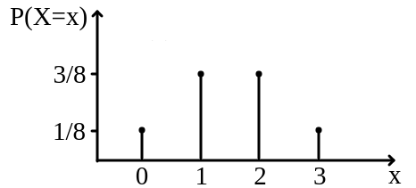
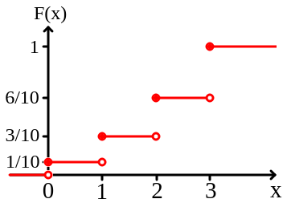

Função de Distribuição Acumulada
ESTAT0072 – Probabilidade I
Prof. Dr. Sadraque E. F. Lucena
sadraquelucena@academico.ufs.br
Definição 10.1: Função de Distribuição Acumulada (FDA)
A Função de Distribuição Acumulada, denotada por \(F(x)\), expressa a probabilidade de a variável aleatória \(X\) assumir um valor menor ou igual a um número real \(x\): \[ F(x)=P(X≤x) = \sum\limits_{x_j\leq x} P(X=x_j). \]
- Intuição: Enquanto a função de probabilidade (aula passada) foca em pontos isolados, a FDA foca no “passado” e no “presente” do valor \(x\).
Propriedades Fundamentais
- Limites: \(\lim\limits_{x \to -\infty} F(x) = 0\) e \(\lim\limits_{x \to \infty} F(x) = 1\).
- Monotonicidade: \(F(x)\) é uma função não-decrescente (nunca diminui).
- Continuidade à Direita: Para variáveis discretas, a função dá um salto no ponto \(x\), mas o valor do ponto pertence ao degrau de cima.
- Cálculo de Intervalos: \(P(a < X \le b) = F(b) - F(a)\).
Gráfico da Função de Distribuição Acumulada
- O gráfio da função de distribuição acumulada tem forma de escada. Cada degrau ocorre exatamente nos valores de \(x\).
- O tamanho do salto no ponto \(x\) é exatamente a probabilidade pontual \(P(X=x)\).
- Exemplo:


Exemplo 10.1
Dada a função de distribuição acumulada abaixo: \[ F(x) = \begin{cases} 0, & x < 1 \\ 0,\!3, & 1 \le x < 3 \\ 0,\!7, & 3 \le x < 4 \\ 1, & x \ge 4 \end{cases} \]
- Determine o suporte da variável aleatória \(X\).
- Encontre a função de probabilidade \(P(X=x)\) para cada valor do suporte.
- Calcule \(P(X \le 3)\) e \(P(X > 3)\).
Exemplo 10.2
Considere a V.A. \(X\) com FDA dada por
- \(F(0)=0,1\);
- \(F(1)=0,4\);
- \(F(2)=0,8\);
- \(F(3)=1,0\).
Calcule:
- \(P(1 < X \le 3)\)
- \(P(X \ge 2)\) usando a regra do complementar via FDA.
- \(P(0,\!5 < X < 2,\!5)\)
Exemplo 10.3
Uma moeda viciada tem probabilidade de cara igual a \(0,6\). Lança-se esta moeda 2 vezes. Seja \(X\) o número de caras obtido.
- Determine a função de probabilidade de \(X\).
- Escreva a expressão analítica da FDA \(F(x)\) (usando a notação de chaves por intervalos).
- Esboce o gráfico da FDA.
Exemplo 10.4
O número de falhas por hora em um servidor, \(X\), possui a seguinte FDA: \[F(x) = 1 - (0,5)^{x+1} \text{ para } x \in \{0, 1, 2, \dots\}\]
- Calcule a probabilidade de ocorrerem no máximo 2 falhas em uma hora.
- Calcule a probabilidade de ocorrerem exatamente 3 falhas. (Lembre-se: \(P(X=x) = F(x) - F(x-1)\)).
Fim